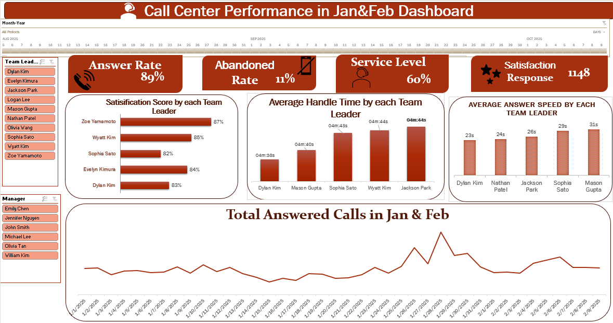

Call Center Analytics Dashboard
An end-to-end executive dashboard built in Excel and Power BI to monitor operational efficiency, agent performance, and customer satisfaction against corporate targets.
- ETL & Modeling: Cleaned, shaped, and transformed raw logs using Power Query, and structured a robust data model via Power Pivot.
- Advanced DAX & Metrics: Programmed weighted DAX measures (Answer Rate, Service Level, AHT, ASA, CSAT) to compute a single composite performance index, preventing "average of averages" distortions.
- Action & Result (Operations): Surfaced that while handle times and answer speeds met targets (20s / 04:37), service levels lagged at 70% (vs. 80% goal), linking the gap to daily volume fluctuations rather than agent inefficiency.
- Action & Result (Customer Experience): Tracked an 81% satisfaction rate with "Excellent" as the frequent rating, identifying that negative feedback concentrated primarily in "Returns" and "Order Related" categories for targeted intervention.
Excel
Power BI
Power Query
Power Pivot
DAX